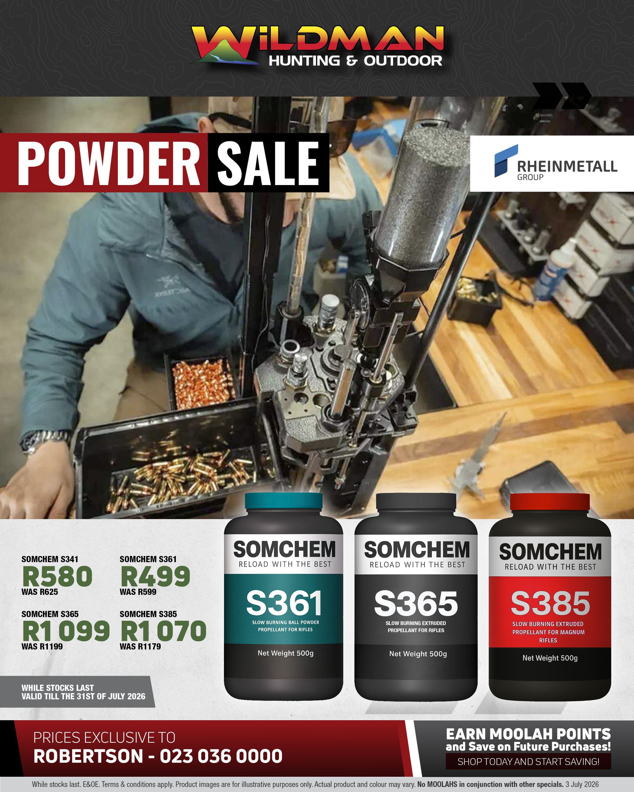
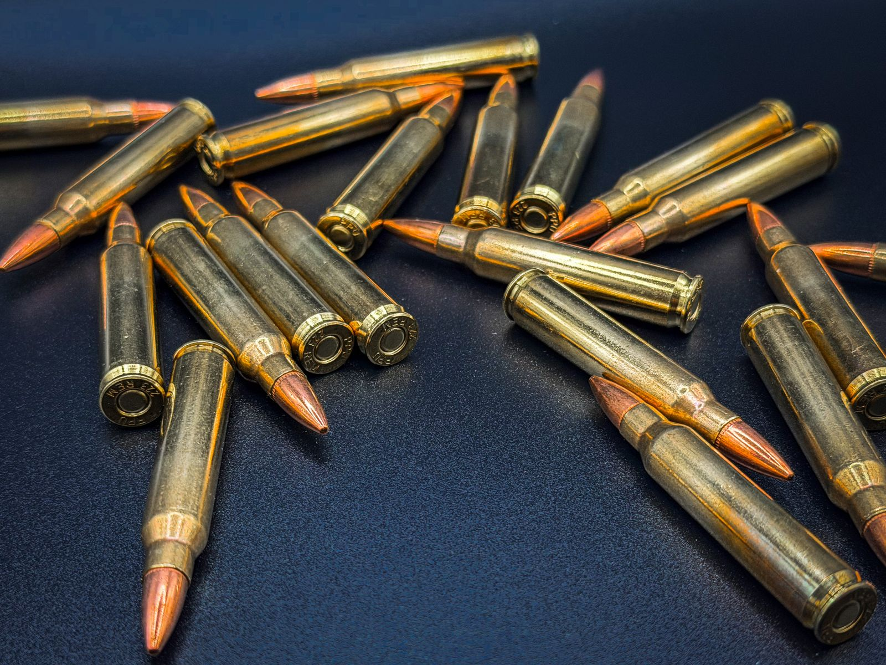
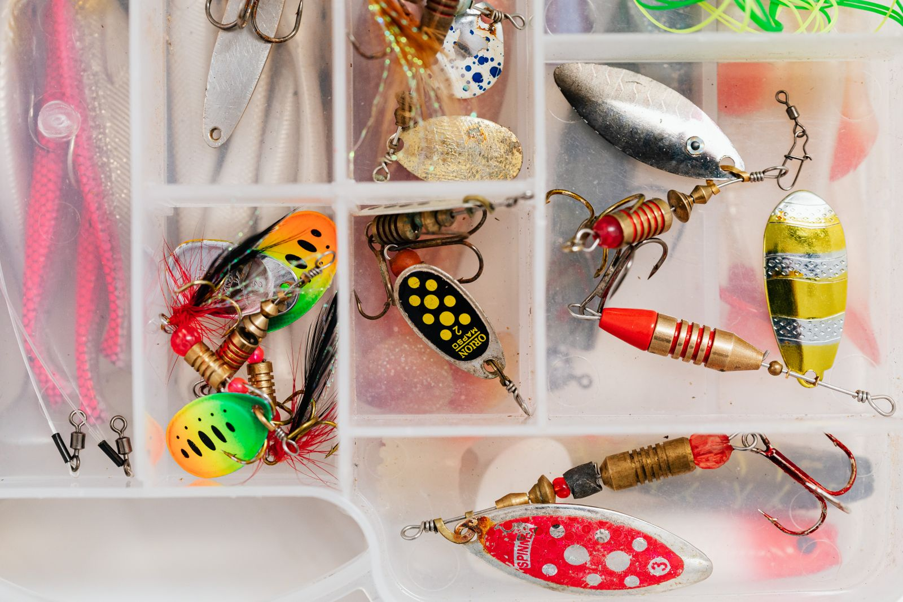
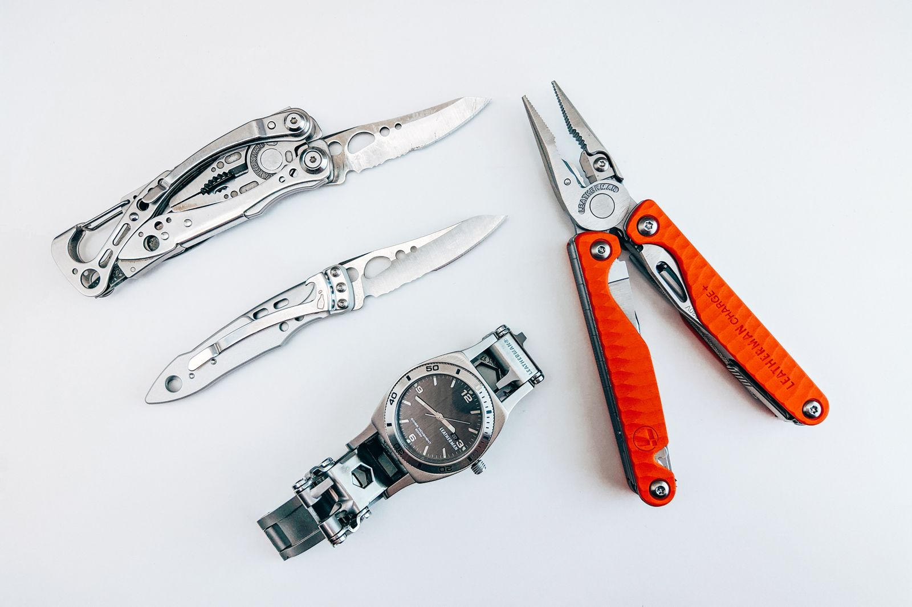

Latest Articles

Reloading Powders 101 — Somchem, Hodgdon & Vihtavuori Explained
New to reloading? We explain the difference between the three powder families on our shelves — and which suits your calibre. All three are on special this July.
Read More
Breede River Fishing Guide — What's Biting This Season
The Breede River is one of the Western Cape's best fishing spots. Here's what species are active this winter, what bait to use, and how to fish it near Robertson.
Read More
New Stock Arrived — Hornady Ammunition and Shimano Reels
We've just received a big new shipment including popular Hornady calibres and Shimano's latest spinning reels. Come check it out in-store or ask us on WhatsApp.
Read MoreGun Safes & Safe Storage — What SA Law Requires
An SABS-approved safe is a legal requirement before your licence is granted. What the FCA requires, how to size your safe, and how to keep rust out.
Read More
Essential Gear Checklist for Your First Hunting Trip
Whether you're going after springbok, kudu or warthog — this checklist will make sure you don't forget anything important before you head out.
Read More
Join Our Rewards Program — Earn on Every Purchase
Our loyalty rewards program is live. Sign up in-store and start earning Wildman Moolah today — it spends like cash on future purchases.
Read MoreHow to Get Your First Firearm Licence in South Africa
Step-by-step guide to applying for your competency certificate and firearm licence under the FCA. We simplify the process — and we can help you do it right here in Robertson.
Read MoreChoosing the Right Rifle Calibre for South African Game
The .308 vs .30-06 vs .270 debate never ends — but the answer depends on what you're hunting. We break it down by species and terrain.
Read More
Bushnell vs Nikko Stirling: Which Scope is Worth Your Money?
We compare two of the most popular mid-range hunting scopes available in South Africa. Real-world performance, clarity, durability and value.
Read More
Top 5 Lures for Bass Fishing in the Breede River Valley
Largemouth bass are abundant in the dams and slow sections of the Breede. These five lures consistently produce results for our local anglers.
Read More
Leatherman Wave+ Review — Still the Best Multi-Tool for Hunters?
We've been carrying the Leatherman Wave+ for years. After extensive field use across hunting camps and fishing trips, here's our honest verdict.
Read More